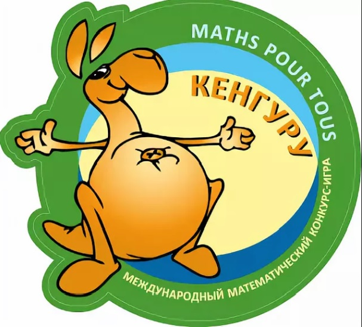
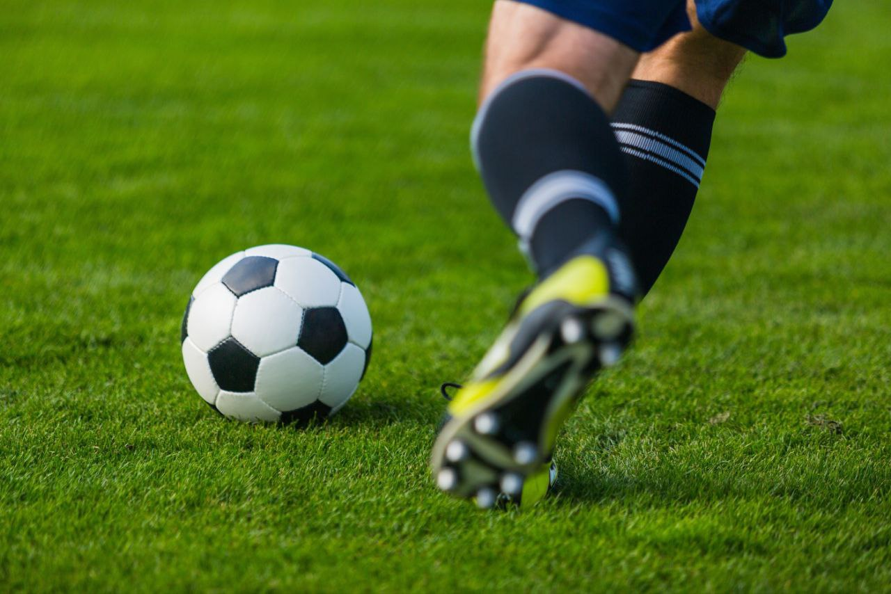

Кенгуру(бронза)
В одно из своих самых первых значимых достижений могу точно записать математическую олимпиаду
"Кенгуру" 2013 года. Тогда, будучи пятиклассником, в своей возрастной группе я смог занять не только
первое место по школе, но также первое место по району, второе - по городу и третье - по Калужской
области.
За такие результаты на итоговой линейке, посвященной окончанию учебного года, пару минут посвятили
тому, чтобы поздравить меня, подарили набор с математическими головоломками и сказали, что я - молодец.
Больше меня, кстати, почему-то на эту олимпиаду не звали. Странно.
Что?Где?Когда?(снова бронза)
Уже в старшей школе я состоял в школьной команде "Что? Где? Когда?". Говоря точнее, я был
её духовным лидером и безоговорочным капитаном. За время моего участия, команда дважды занимала
3-е место, трижды - 4-е и однажды провалившись - 13-е; при среднем количестве команд-участников
около 35-ти.
Наиболее мне запомнилась серия, в которой моя команда набрала одинаковое количество верных ответов
с ещё двумя командами и делила вторую строчку, но после подсчета дополнительных показателей опустилась
на четвертую. Как сейчас помню вопрос, ответ на который был из двух слов, начинавшихся с одной буквы, и
вместо правильного "сообщающиеся сосуды" я ответил "братья-близнецы". Эх.
После школы меня, кстати, почему-то на "Что? Где? Когда?" больше не звали. Странно.
Чемпионат г. Калуги по минифутболу(не выше бронзы)
Также можно упомянуть и успехи в области традиционного спорта. Так, однажды я участвовал
в межшкольном чемпионате г. Калуги по минифутболу. Играл на позиции вратаря.
Играли мы не тренируясь, на чистом энтузиазме; но даже несмотря на это, со скрипом, но
стали одной из 4-х команд, прошедших групповой этап и вышедших в плей-офф. К несчастью,
на том самом энтузиазме обыграть будущих чемпионов не вышло - парни из 14-й школы вытерли
о нас ноги 7:0. А в матче за "бронзу" нас ждала малособытийная ничья 1:1 и серия пенальти.
Мои оппоненты дважды пробили в штангу, а также разок и я смог встать на пути мяча в ворота и,
попутно, забив 3 из 5-ти своих пенальти наша команда смогла забраться на третье место.
После школы меня, кстати, почему-то на минифутбольные соревнования больше не звали. Не странно.